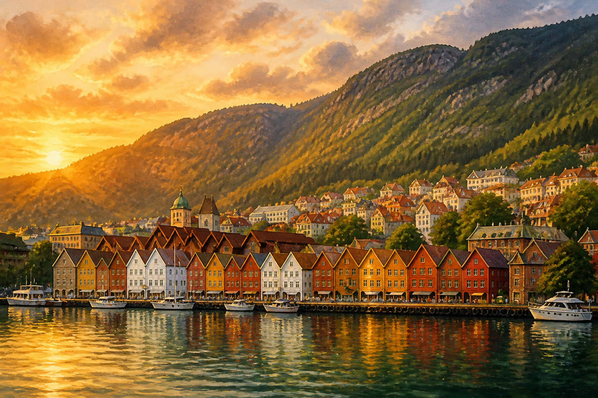
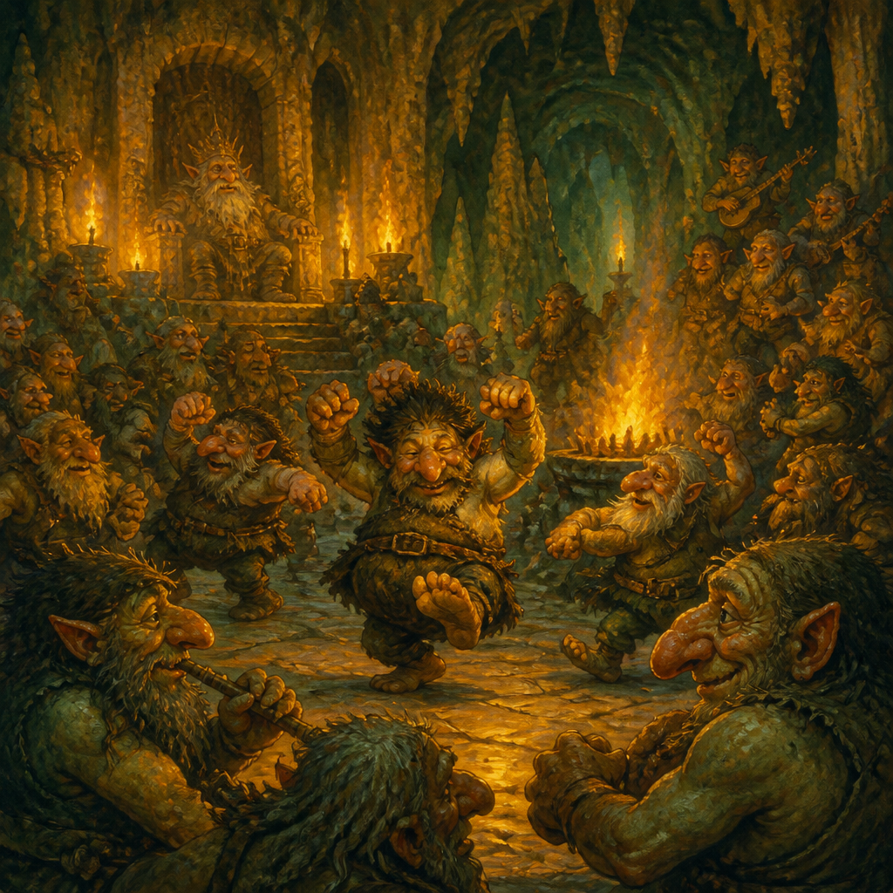
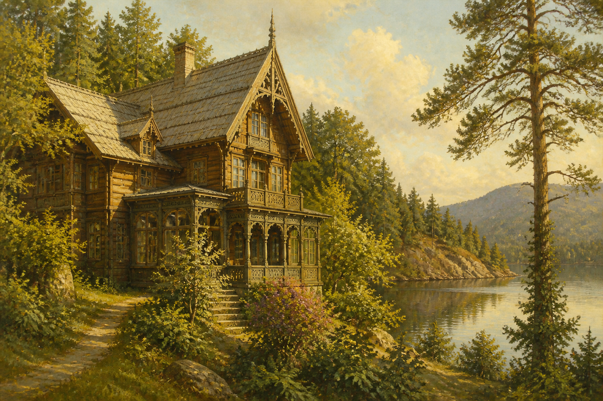
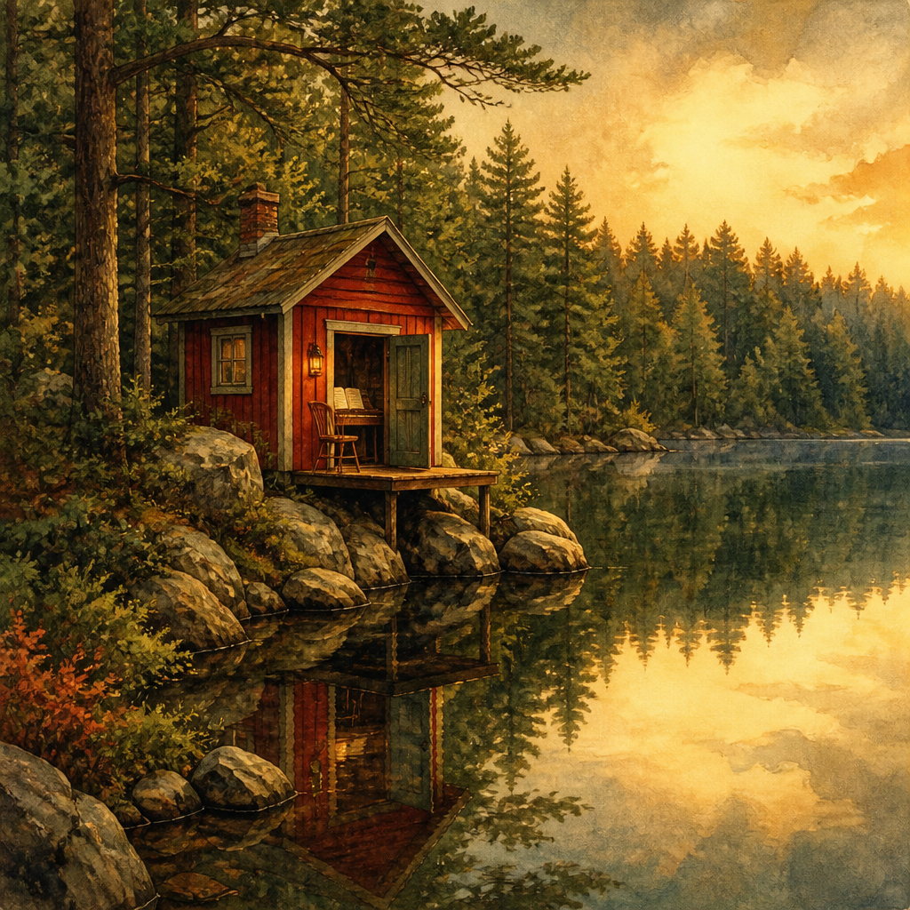
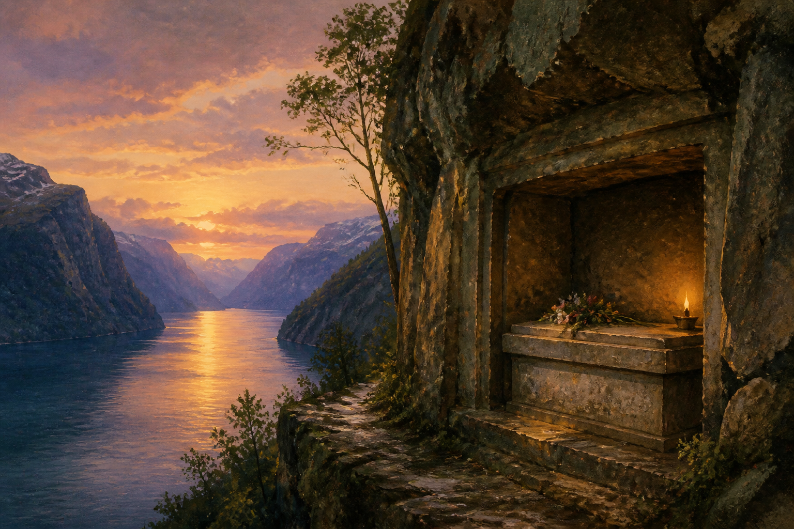

他一生幾乎沒有離開過卑爾根太久，卻讓全世界記住了「山大王的宮殿」與清晨陽光灑落峽灣的樣子。這是關於這位挪威民族樂派作曲家、他的代表作，以及他湖畔小屋的故事。
愛德華・葛利格（Edvard Hagerup Grieg）1843 年出生於挪威西岸的卑爾根，家族原姓 Greig，祖先是 18 世紀從蘇格蘭亞伯丁移居挪威的商人——這也是為什麼他的姓氏拼法看起來不太像典型的挪威文。
葛利格終其一生對卑爾根與挪威西部的峽灣風景懷有深厚感情，即使赴德國萊比錫音樂院留學、也曾旅居丹麥哥本哈根，晚年仍選擇回到卑爾根近郊的湖畔別墅 Troldhaugen 定居、創作，並在此度過人生最後的二十多年。他被公認為 19 世紀「民族樂派（musical nationalism）」最重要的代表人物之一，把挪威民間音樂的調式、節奏與峽灣地景的意象，寫進了浪漫主義的和聲語言裡。

易卜生的詩劇《皮爾・金》講述一個愛吹牛、貪婪又充滿幻想的挪威農村青年皮爾・金，離鄉遊蕩天涯、闖入山妖國度、遠赴摩洛哥與埃及發財冒險，最終在垂垂老矣時被摯愛索爾維格（Solveig）的歌聲喚回、獲得救贖的故事。易卜生原本希望這齣戲能配上真正的挪威民間音樂質感，於是找上了當時聲望正盛的葛利格。
葛利格為全劇寫了超過 20 段配樂，後來從中挑選出最精華的段落，編成《皮爾金第一號組曲》Op.46 與《第二號組曲》Op.55，成為音樂會上最常被演奏的葛利格作品，其中幾段甚至是古典音樂中最廣為人知的旋律之一：
| 樂章 | 組曲 | 意象 |
|---|---|---|
| 清晨情緒（Morning Mood） | 第一號組曲 第1曲 | 皮爾在北非沙漠中，音樂卻描繪出挪威峽灣清晨的日出光景 |
| 奧賽之死（Åse's Death） | 第一號組曲 第2曲 | 皮爾母親奧賽臨終，僅用弦樂合奏寫成的哀傷慢板 |
| 安妮特拉之舞（Anitra's Dance） | 第一號組曲 第3曲 | 阿拉伯風情的優雅舞曲，描寫貝都因酋長之女安妮特拉 |
| 山大王的宮殿（In the Hall of the Mountain King） | 第一號組曲 第4曲 | 皮爾誤闖山妖國度，音樂由陰森緩慢逐漸加速至瘋狂高潮，是葛利格最著名的旋律 |
| 索爾維格之歌（Solveig's Song） | 第二號組曲 第4曲 | 癡心等待皮爾一生的索爾維格所唱的思念之歌，全劇情感的終點 |

1868 年，年僅 25 歲的葛利格在丹麥度假時完成了他唯一的一首鋼琴協奏曲——a 小調鋼琴協奏曲。開頭定音鼓一聲滾奏、鋼琴隨即由高音急墜而下的和弦動機，是古典音樂史上辨識度最高的開場之一，據說也影響了後來拉赫曼尼諾夫等作曲家的協奏曲寫作手法。
這首協奏曲融合了德國浪漫主義的協奏曲架構（受舒曼 a 小調鋼琴協奏曲啟發）與挪威民謠風味的旋律語彙，首演後迅速獲得李斯特的公開讚賞——李斯特甚至在葛利格面前當場視奏全曲，並大聲讚嘆其中的挪威風格。這首曲子至今仍是全球音樂會與鋼琴比賽最常演出的協奏曲之一。
葛利格並未創作任何小提琴協奏曲，這是坊間常見的誤傳。他真正留下的小提琴代表作，是三首小提琴與鋼琴奏鳴曲，橫跨他創作生涯的不同階段，也常被視為他自己最珍視的室內樂作品——葛利格本人生前經常親自擔任鋼琴部分，與小提琴家在沙龍與音樂會上演出這幾首奏鳴曲。
| 作品 | 年代 | 特色 |
|---|---|---|
| 第一號 F 大調 Op.8 | 1865 年，寫於哥本哈根 | 清新明亮，仍帶有較多德國浪漫樂派的影子 |
| 第二號 G 大調 Op.13 | 1867 年，寫於克里斯蒂安尼亞（今奧斯陸） | 挪威民間舞曲節奏更為鮮明，色彩活潑 |
| 第三號 c 小調 Op.45 | 1887 年，寫於 Troldhaugen | 葛利格本人自認最成熟的一首，情感濃烈、結構最為緊湊，是三首中最常被單獨演出的一首 |
葛利格唯一的大提琴奏鳴曲完成於 1882–1883 年，1883 年 10 月在德勒斯登首演。他將這首作品題獻給自己的哥哥約翰・葛利格（John Grieg）——一位業餘大提琴愛好者，這也讓這首曲子多了一層私人情感的溫度。相較於清朗抒情的小提琴奏鳴曲，這首大提琴奏鳴曲的音色更為深沉厚重，第一樂章甚至直接引用了他為《皮爾金》所寫的〈奧賽之死〉主題動機，展現出更濃烈、戲劇化的浪漫主義色彩。
「Troldhaugen」意為「山妖之丘」，是葛利格夫婦 1885 年在卑爾根南郊 Hop 湖畔建造的別墅，兩人在此定居直到 1907 年葛利格過世。1928 年，妮娜將別墅捐贈給卑爾根市，正式作為葛利格博物館（Edvard Grieg Museum）對外開放，如今由卑爾根公立美術館機構 KODE 負責營運管理。

博物館園區主要由三部分組成：

葛利格夫婦過世後，兩人的骨灰分別安放於別墅旁面對湖面的岩壁墓穴中——這也是葛利格生前親自選定的長眠之處，如今是樂迷造訪時最常駐足致意的角落。

Troldhaugen 位於卑爾根市區南方約 8 公里的 Hop，距市中心車程或大眾運輸約 20–30 分鐘，全年開放（冬季部分時段休館），夏季旺季每日均有音樂會場次。詳細開放時間、票價與交通方式請以官方網站公告為準：
前往 Troldhaugen 官方網站（KODE Bergen）↗ Google 地圖：葛利格故居暨墓地位置 ↗葛利格終其一生幾乎只以峽灣、民謠與家鄉風景為創作核心，柴可夫斯基曾稱讚他的音樂「像北歐的空氣一樣清新」；德布西則從他的和聲用法中，看見了後來印象樂派對色彩與氛圍的追求方向。他也是史上第一批被大量錄製唱片（愛迪生留聲機時代）並留下自己演奏紀錄的重要作曲家之一。
今日，卑爾根每年夏天舉辦以他為名的國際葛利格音樂節（Festspillene i Bergen），Troldhaugen 也持續作為活躍的音樂廳與朝聖景點，讓這位「峽灣之子」的旋律，繼續在他最深愛的家鄉山水之間迴響。